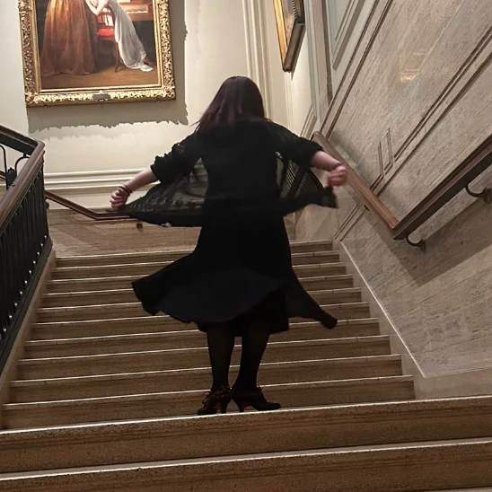

a yurt in the campgrounds
Faery Yurt
Helen’s candlelit yurt on Stimpunks.World, pitched at the edge of the woods. Lots of books, music, faerys, candle light and weird thoughts and happenings.....
This is my yurt, pitched at the edge of the woods in the campgrounds of Stimpunks.World, with a stream tracing the trees; follow the fairy lights from the treeline and you will find it. It is always night here, the good kind of night, candles lit along the shelves and fairy lights strung low across the canvas so the whole room glows amber instead of going properly dark.
The sofas are too soft to sit in properly (you sink, and then you stay), the beanbags were claimed by a hamster some time ago, and the ivy worked its way in through the window frame years back and was never asked to leave. The flap of the door is always open. Come in, take your shoes off, and stay as long as you need to.
Like More Realms, the looser, weirder realm beyond Autistic Realms, this is not a place of conclusions or answers. It is a place to wander, to feel, to think sideways, and to deep dive monotropically into other ways of experiencing the world. There is no map, but there are threads, glimmers, and soft, weird spaces to explore…
HOW LOUD DO YOU WANT IT?
Starts wherever your device says. In here MAX lights the fairy lights and turns the record; nothing else in the yurt ever moves.
The Soundtrack
The sound of this room is a yarn of songs I keep coming back to, spun into one playlist. Press play and it runs from the top until you stop it; nothing plays before you press.
Faery Yurt’s Yarn, on YouTube, from my own channel.
Or pick one. Every song says how long it runs before you press it, and nothing plays until you do. Each one plays where it hangs, or goes on the phonograph in place of the whole yarn, and taking it off puts the yarn back without starting it.
Every song on the yarn
-
The Dark Side of the Moon
Pink Floyd
the 50th anniversary remaster, the whole album
42:56 · on YouTube, via Pink Floyd
-
Echo of My Shadow
AURORA
The copy on the yarn itself no longer plays, and the whole yarn says so when it gets there. This one is AURORA’s own.
4:05 · on YouTube, via AURORA
-
Mysterons
Portishead
5:04 · on YouTube, via Harry
-
Running Up That Hill (A Deal with God)
Kate Bush
4:59 · on YouTube, via Kate Bush
-
Through the Windowpane
Guillemots
3:39 · on YouTube, via Guillemots
-
Talkin’ ’bout a Revolution
Tracy Chapman
2:40 · on YouTube, via MrsMusic04
-
Goodbye Small Head
Ezra Furman
the whole album
42:27 · on YouTube, via Radiorock TheOriginal
-
Texas Moon
Khruangbin & Leon Bridges
the whole EP
22:40 · on YouTube, via Natural Selection
-
Under You
Andrew Sa
live at WFUV
3:29 · on YouTube, via WFUV Public Radio
-
Simply the Best
Noah Reid
from Schitt’s Creek
2:44 · on YouTube, via Elizabeth Mitchell
-
Dance With Somebody
Chaparelle
3:33 · on YouTube, via Chaparelle
-
Little Fluffy Clouds
The Orb
4:01 · on YouTube, via Not and Now Available on Youtube!
Read off the yarn on 2026-10-13, in its own order. A song I add plays on the whole yarn straight away, and turns up here the next time somebody reads the playlist again.
The Bookshelf
These are the books that live behind my desk, the ones I keep returning to. The shelf is nowhere near finished; this is just where it starts.
More arriving as I remember what I’ve lent out and never got back.

The Glimmer Window
There is a window at the far end of the room that does not look out onto the field outside. Nobody is entirely sure where it looks out onto instead. Open the shutters and see for yourself.

The Regulation Nook
Every good library has a regulation corner, even if nobody calls it that officially. Here is what is in mine.
Nature Notes
Flowers in my hair, boots by the stream, conkers on moss, mushrooms in the leaf litter and a tree turning gold.
All photographs by Helen Edgar. The mushrooms are here for how they look, and nothing on this page says what kind they are.
Who Else Lives Here
The library is a shared arrangement. Currently in residence:
the cats
Harry, Zara, Ziggy and Tiggy
a small clowder, all convinced the shelves belong to them
the dog
Benji
has strong opinions about the doorbell
the hamster
Gibbles
runs the night shift and answers to nobody
Cats Coven
Harry, Zara, Ziggy and Tiggy, at home on the cat tree, out in the catio, and asleep wherever is softest.
Pebbles by the door
Penguins bring each other pebbles, and so do we: a small thing somebody found and thought somebody else would like, given on nobody’s clock. There is a basket here of things Helen has put out for anybody to take, and a bowl for leaving one of your own. It was Helen’s own idea, the day she went to the Solarpunk Hermitage to watch a film; what pebbling is, and whose word it is, is in our glossary and in the Arcade’s pebbling cabinet.
The basket: take one
-
The amethyst cave: Anya Gallaccio’s The Light Pours Out Of Me
Amethyst is a violet quartz, coloured by traces of iron, and the birthstone for February. It has long been held to be a calming stone, kept for peace of mind, clear thinking and restful sleep. Wishing you a magical glimmer day. A grotto lined with it at Jupiter Artland, near Edinburgh, on YouTube via Yoga & Healing Fairy, 0:30.
The bowl: leave one
The bowl needs scripts to read it.
Leaving a pebble takes a CB handle and the community password: sign on at the Community Center, then come back. Taking one takes nothing.
- Anybody can see the bowl, and only people signed on to the CB can leave a pebble in it. A handle is whatever somebody typed, so a name in the bowl is not proof of who left it.
- A pebble goes seven days after it is left, and a full bowl lets its oldest go to make room. The base station can lift one out sooner, and so can we if you ask: what the bowls keep.
- A link shows its whole address, so what you read is where it goes.
- Nothing here is counted: not what was taken, not what was left, and not who came to the door. Leaving a pebble is the only footprint there is, and nobody has to leave one.
Where To Find Me
The yurt itself sits on a small campsite off the main street, tucked into the woodlands with a stream tracing the edge of the trees. Follow the fairy lights from the treeline and you will find the door.
Out in the wider world, my writing lives in two places. Autistic Realms is where I share grounded, practical support for families, educators, and those navigating Autistic ways of being. More Realms is where things are looser, weirder, more speculative.
Job marker — a candle stub burnt most of the way down
You have found a job marker. The Adventurer’s Guild is a shopfront on the street, and it posts jobs that send you round these rooms. Take the code below to its board and that job is done. Nothing here is scored, nothing expires, and one is a perfectly good number of jobs to do.
The job: A candle stub on the windowsill
Quest code: TALLOW